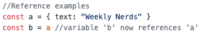
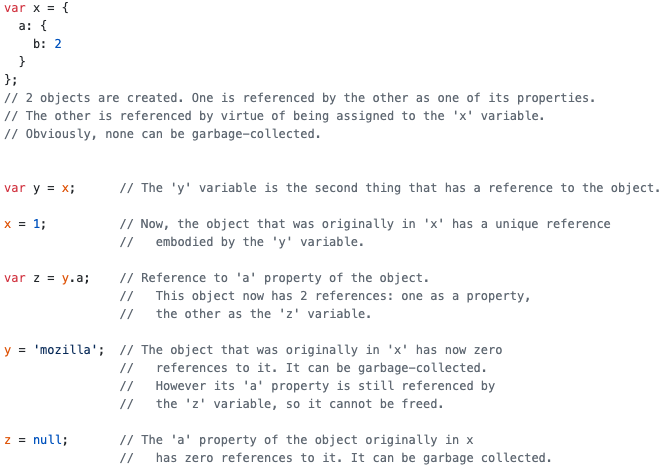
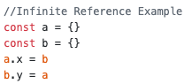
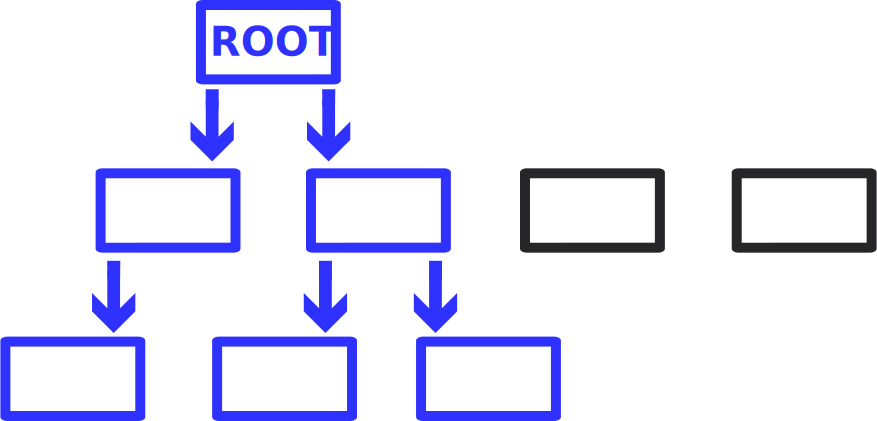
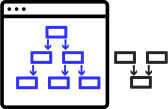

What is Garbage Collection?
Javascript uses a process to remove objects that aren’t used anymore, this is called garbage collection (GB). This process is implemented in the browser and differs slightly depending on the vendor. Some browsers used to allow for manually triggering the GB process but this is considered bad-practice; developers shouldn't rely on the browser to manage memory, developers should always be careful with memory.
The automaticity of garbage collection is a potential source of confusion: it can give developers the false impression that they don't need to worry about memory management.
Memory Life Cycle
The Javascript memory life cycle is as follows:
- Allocate the memory you need
- Use the allocated memory (read, write)
- Release the allocated memory when it is not needed anymore
Allocation
Since Javascript is a high-level / human readable language, instead of manually having to allocatie memory Javascript does it for you. In many low-level languages this has to be done (partially) by the developers.
- direct; a value is initialized
- indirect; a function or method creates something which then initializes a value
Javascript allocates memory:
Using memory
Using values means: reading and writing. Whenever you use or write a variable Javascript reads the variable from memory and thus uses the allocated memory.
Release memory
Whenever memory is no longer needed it has to be released, this is called garbage collection. Since Javascript is a high-level language it automatically releases redundant memory.
In order to release memory it first has to determine what memory is no longer needed, to do this GB uses algorithms.
Garbage Collection Algorithms
GB algorithms use references to determine if memory is still needed. A reference is basically a link;
Above is a very simple example of a reference, but in reality it's a bit more difficult; objects can also reference their own properties if a property value is also an object. Other examples are __proto__ objects. Too make it easier to understand, think of references as a link or reference a variable has to another variable.
- reference-counting
- mark-sweep
The main GB algorithms:
Reference Counting algorithm
This is the most simple algorithm but also the least thorough / specific. It determines if an object is still needed by counting the number of references to it. If the object is not referenced by any other object the algorithm deems it 'garbage' and it should be released.
The above code was taken from mdn
The reference counting algorithm isn't completely reliable because it can run into problems. When 2 objects reference each other a circle of references exists; meaning both objects will never be seen as 'garbage' because both objects will always reference the other object.
In the above code both object have a property referencing the other and thus creating a infinite reference
Both objects only reference the other object and neither is used elsewehere meaning it should be released, however the reference counting algorithm can't detect this as both objects are being referenced and thus still seen as needed.
Mark and Sweep algorithm
The algorithm uses the global scope as the root (starting point), from here it finds all objects referenced from the root and marks them, then it finds all objects referenced from the those marked objects. This cycle is repeated until there are no new marked objects.
This results in a lot of marked objects, all marked objects are still reachable and thus needed. It is however possible that there are objects left unmarked, these are the objects that weren't reached / reachable. Since they can't be reached they can't be used, if they can't be used they aren't needed and they should be released.
Example:
The algorithm starts with the global scope (the most global object) and works it way down; it marks all references then from there it marks all references, this repeats until there are no new references left.
This results in a collection of marked objects (these are blue in the above image), these objects are reachable. There are also unreachable objects (these are black in the above image), these weren't reachable.
The unreachable objects remain unmarked, these objects aren't used in any way (not referenced, not readable, not writable). To preserve memory all unmarked objects should be collected (deleted).
In the above image both algorithms (reference-counting and mark-sweep) would collect the black objects.
In the above image the reference-counting algorithm would not collect the black objects because they both still have 1 reference (to each other). The mark-sweep algorithm can't reach the blacjk objects and will collect and delete them.
This demonstrates why the mark-sweep algorithm is better; it resolves the infinite reference circle problem.
As of 2012, all modern browsers use the mark-and-sweep garbage collector algorithm.
Also
Garbage collectors also rearrange the memory to fill up the empty spaces after releasing objects from memory. This prevents memory from being stored seperately and improves the physical placing of memory pieces which results in faster times. You can see this as a sort of indexing to optimize retrieving memory.